In [1]
Out [1]
Explore the iris dataset, then answer questions A–E with line plots, bar charts, histograms, KDE curves, scatter and box plots.
Load iris from a URL and sketch line, scatter, histogram, box and pair plots of every measurement.
First Five records: sepal_length sepal_width petal_length petal_width species 0 5.1 3.5 1.4 0.2 setosa 1 4.9 3.0 1.4 0.2 setosa 2 4.7 3.2 1.3 0.2 setosa 3 4.6 3.1 1.5 0.2 setosa 4 5.0 3.6 1.4 0.2 setosa Data information: <class 'pandas.DataFrame'> RangeIndex: 150 entries, 0 to 149 Data columns (total 5 columns): # Column Non-Null Count Dtype --- ------ -------------- ----- 0 sepal_length 150 non-null float64 1 sepal_width 150 non-null float64 …
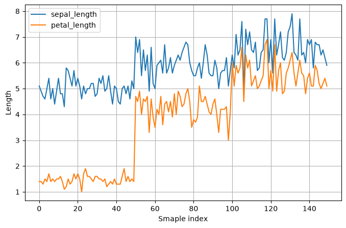
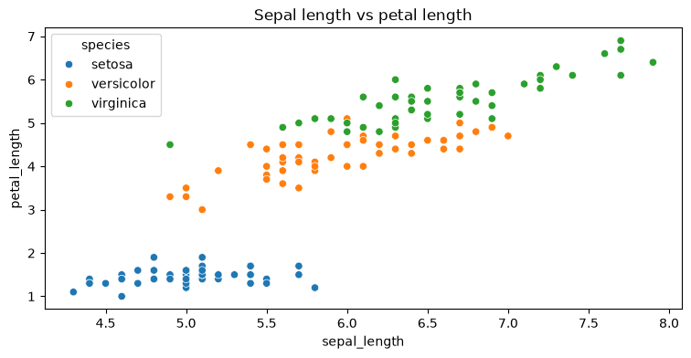
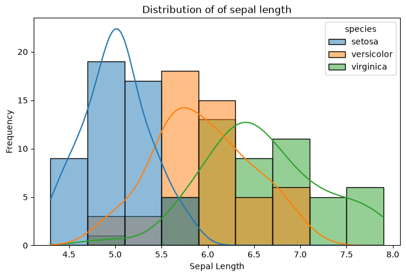
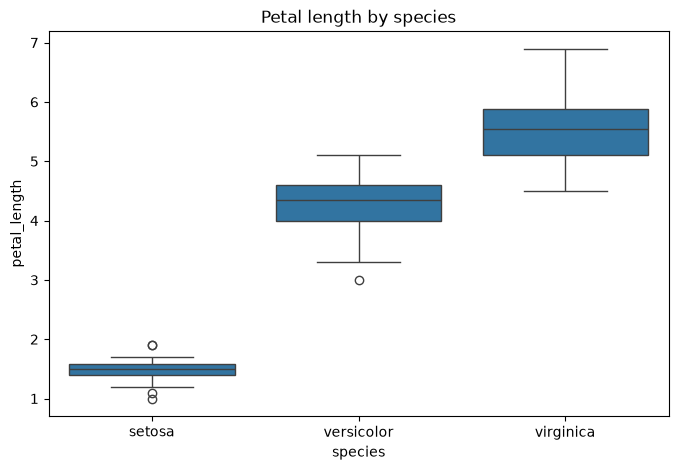
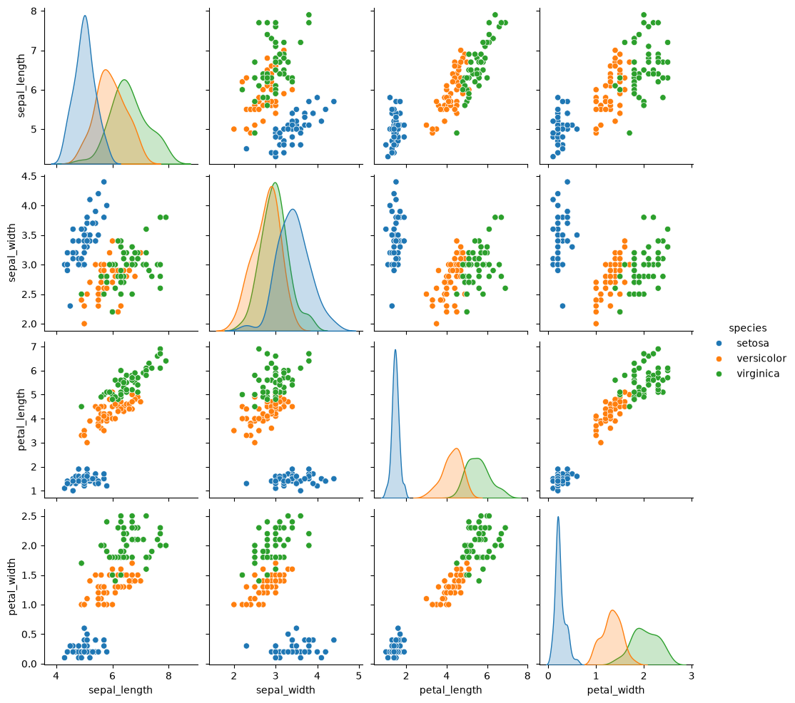
Two stacked line subplots comparing six months of sales against expenses.
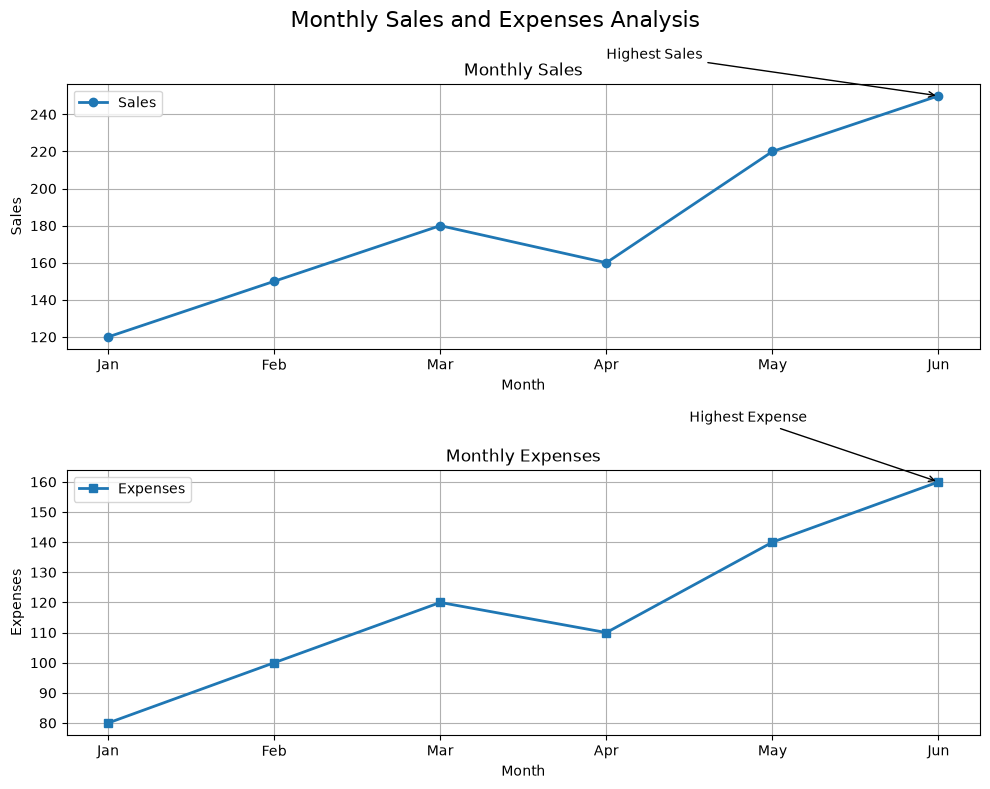
Student marks per language as a grouped bar chart, then as a stacked one.
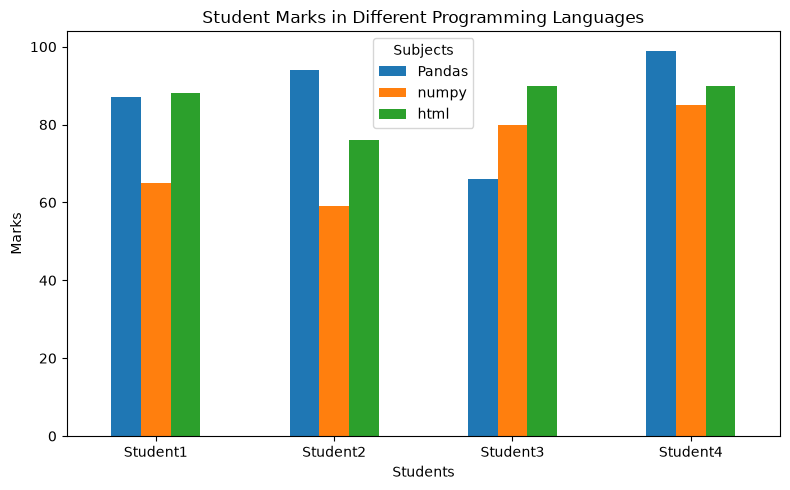
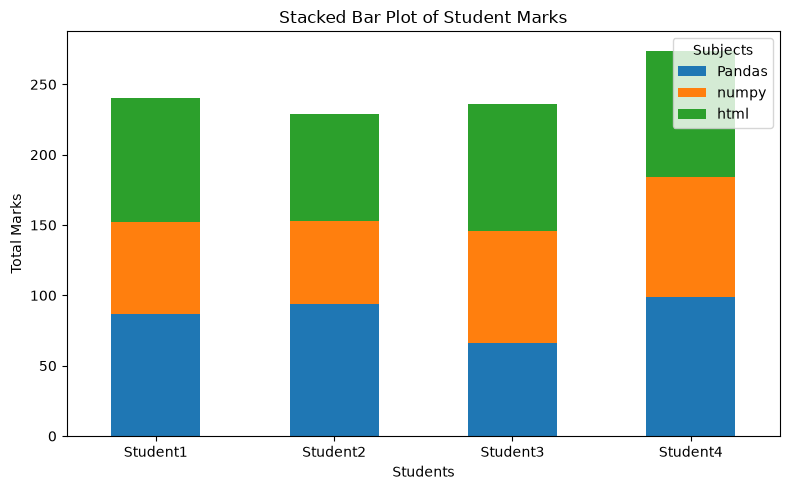
Distribution of 20 recorded marks, raw and smoothed with a KDE curve.
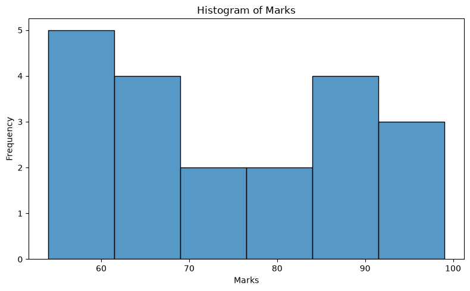
Relationship between hours studied and marks scored across ten students.
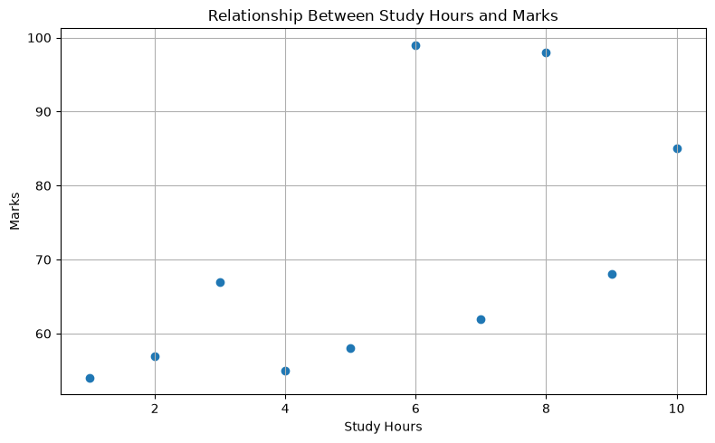
Compare mark distributions across departments at a glance.
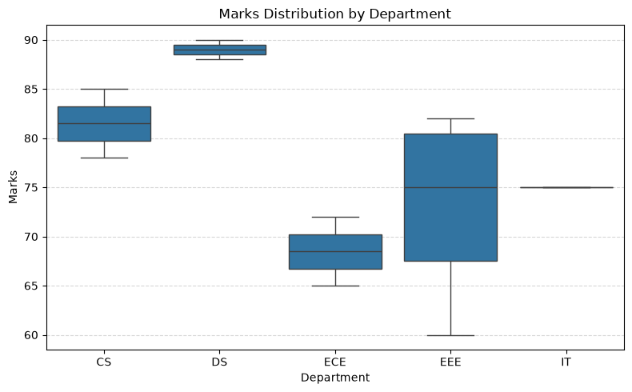